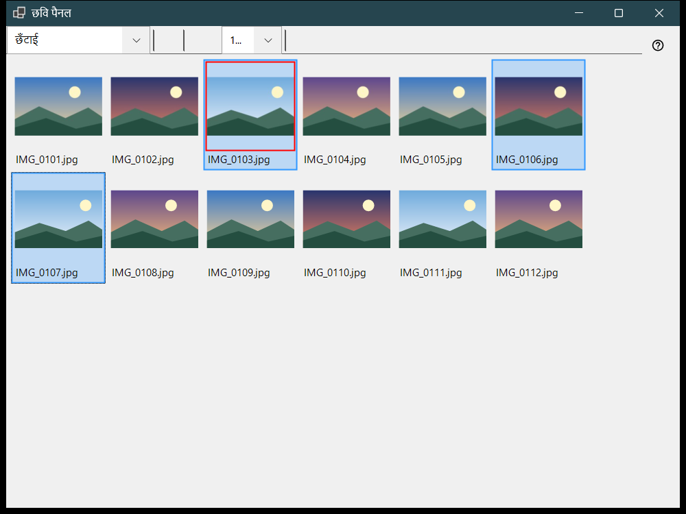
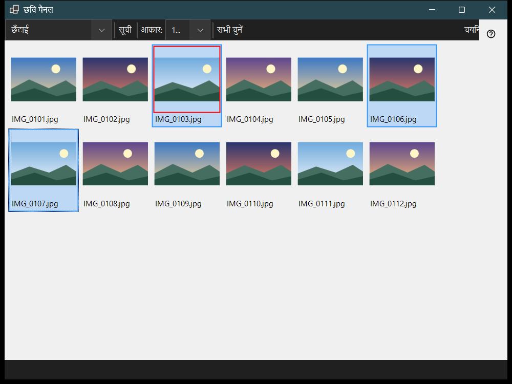

छवि पैनल
यह किस लिए है
छवि पैनल व्यूअर से F3 दबाने पर खुलता है और दो मोड में काम करता है, जो पैनल मोड सूची में चुने जाते हैं: छँटाई, यानी मौजूदा फ़ोल्डर के थंबनेल की ग्रिड, और फ़ाइल प्रबंधक, यानी स्थानों, फ़ोल्डरों और फ़ाइल कमांडों वाला ब्राउज़र। फ़ाइलें देखने, उन्हें चुनने और पैनल बंद करने से मुख्य विंडो में दिखने वाली सामग्री नहीं बदलती।


इस क्रम में
- व्यूअर में F3 दबाएँ।
- पैनल मोड में मोड चुनें।
- फ़ाइलें चुनें: क्लिक करें, सीमा के लिए Shift+क्लिक, एक फ़ाइल को टॉगल करने के लिए Ctrl+क्लिक, या फ़्रेम खींचें।
- छँटाई मोड में चयन को गंतव्य फ़ोल्डर में ले जाने के लिए 0-9 दबाएँ, या कॉपी करने के लिए ऊपरी पंक्ति के अंक के साथ Shift दबाएँ; Ctrl+Z आख़िरी कार्रवाई को पलट देता है।
- फ़ाइल को मुख्य विंडो में खोलने के लिए उस पर डबल-क्लिक करें या Enter दबाएँ।
- चल रही कार्रवाई रद्द करने के लिए Esc दबाएँ, फिर पैनल बंद करने के लिए दोबारा Esc दबाएँ।
तत्व
पैनल मोड
पैनल मोड छँटाई और फ़ाइल प्रबंधक के बीच बदलता है। छँटाई मोड त्वरित स्थानांतरण और कॉपी के लिए मौजूदा फ़ोल्डर के थंबनेल दिखाता है; फ़ाइल प्रबंधक कोई भी फ़ोल्डर ब्राउज़ करता है और फ़ाइल कमांड देता है।
आकार, लेआउट और चयन
स्लाइडर (आकार:) थंबनेल का आकार तय करता है, टाइलें और सूची बटन लेआउट बदलते हैं (Ctrl+L), और चयन काउंटर बताता है कि कुल में से कितनी फ़ाइलें चुनी गई हैं।
चयन और छँटाई
क्लिक चुनता है, Shift+क्लिक सीमा चुनता है, Ctrl+क्लिक एक फ़ाइल को टॉगल करता है और खींचने से चयन फ़्रेम बनता है। Ctrl+A सब चुनता है, Ctrl+Shift+A चयन हटाता है, Ctrl+I उसे उलटता है, Space फ़ाइल पर निशान लगाता है, और तीर, Home, End, PgUp व PgDn से घूमा जा सकता है। अंक 0-9 चयन को उस कुंजी के गंतव्य फ़ोल्डर में ले जाते हैं, ऊपरी पंक्ति के अंक के साथ Shift उसे कॉपी करता है, Del उसे हटाता है और Ctrl+Z आख़िरी कार्रवाई को पलट देता है।
फ़िल्टर और छिपी फ़ाइलें
सामग्री फ़िल्टर मीडिया फ़ाइलें, मीडिया और दस्तावेज़ या सभी फ़ाइलें चुनता है, और छिपा हुआ बटन छिपी फ़ाइलें दिखाता या छिपाता है। सेटिंग्स.. बटन सेटिंग्स विंडो को फ़ाइल प्रबंधक पृष्ठ पर खोलता है, जहाँ प्रदर्शन मोड, फ़िल्टर, स्थान और याद रखा गया छँटाई क्रम तय होते हैं।
फ़ाइल कमांड
Ctrl+C, Ctrl+X और Ctrl+V कॉपी, कट और पेस्ट करते हैं, F2 नाम बदलता है, Ctrl+Shift+N फ़ोल्डर बनाता है, Del और Shift+Del चुने हुए आइटम हटाते हैं और Alt+Enter गुण दिखाता है। संसाधनों के बीच कॉपी या स्थानांतरण इस पीसी से होकर जाता है।
ZIP बनाएँ
ZIP बनाएँ सभी चुने हुए फ़ोल्डरों और फ़ाइलों को एक आर्काइव में पैक करता है। मूल फ़ाइलें हटाना डिफ़ॉल्ट रूप से बंद है और आर्काइव की जाँच व प्रकाशन के बाद ही अनुमत होता है।
यहाँ निकालें
यहाँ निकालें एक चुने हुए आर्काइव पर काम करता है: फ़ोल्डर और सामान्य फ़ाइलें रखी जाती हैं, मूल आर्काइव अपनी जगह रहता है और निकाले गए प्रोग्राम कभी नहीं चलाए जाते। Esc कार्रवाई रद्द करता है।